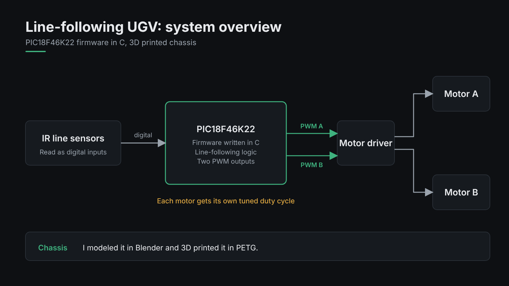
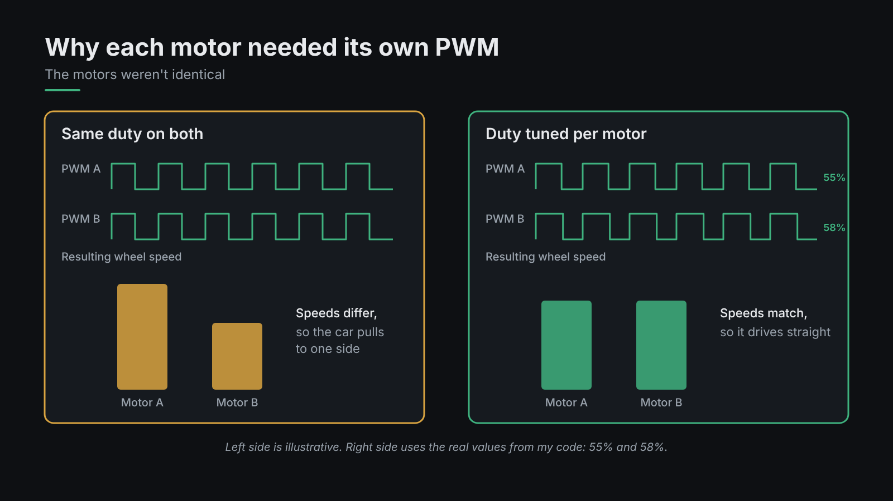
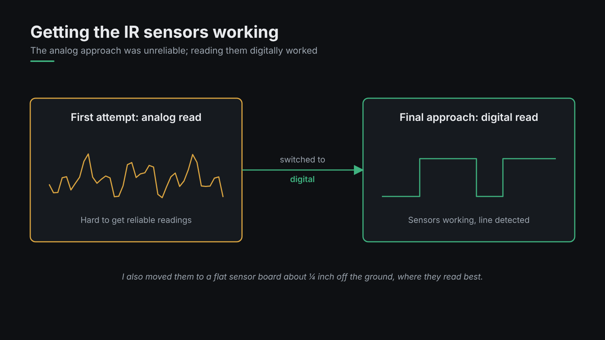
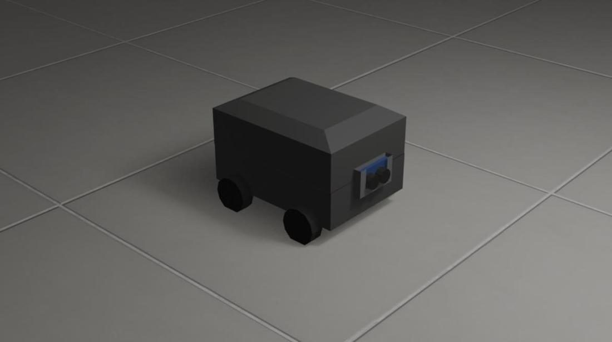
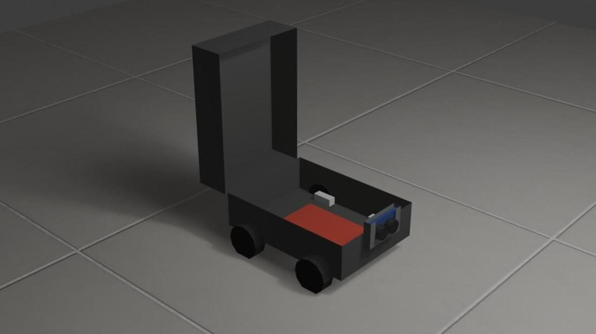
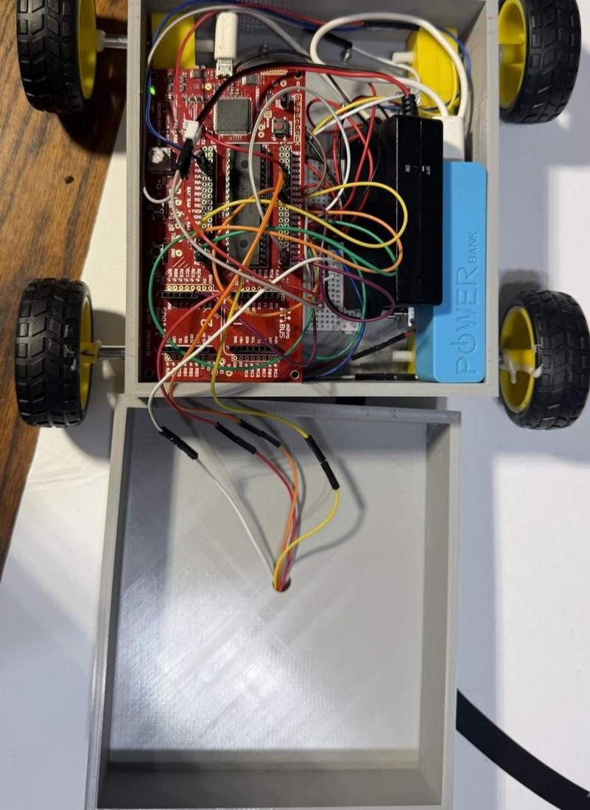
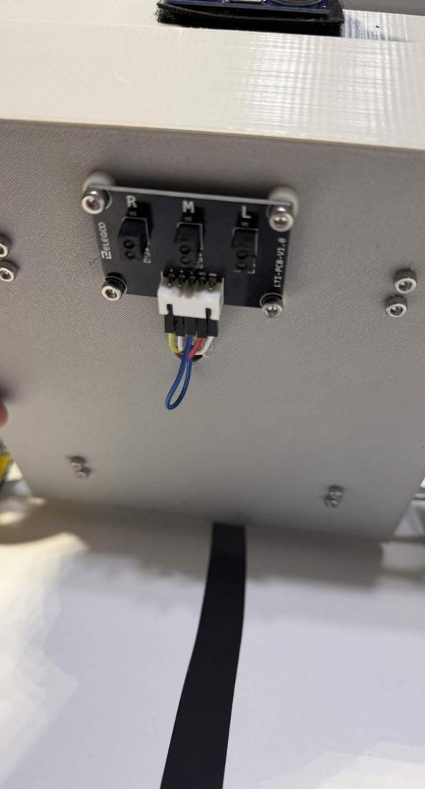

Embedded firmware · Mechanical design
Line-Following UGV
A little car that follows a black line and stops before it hits anything. It was for my microcontrollers class, on a team of four. I ended up doing the chassis, the wiring, and some of the code, written in C on a PIC18F.


What I built
I modeled the chassis in Blender and 3D printed it in PETG, with spots for the board, motors, and sensors.
On the code side, the car checks for obstacles first, and if something's within 5 inches it stops. Otherwise it reads the three line sensors and decides which way to steer.
Steering logic
If the middle sensor sees the line, it goes straight. If a side sensor sees it, it turns back toward it, harder the further off it is. If it loses the line completely, it turns toward the side it last saw it on.
Problems we hit


Motors that didn't match
The car kept drifting to one side. I thought it was my code at first, but the motors just weren't identical, so the same PWM spun them at different speeds. I gave each motor its own duty cycle, 55 and 58, and it drove straight.
#define BASE_SPEED_LEFT 55 #define BASE_SPEED_RIGHT 58
IR sensors
The sensors only read reliably about a quarter inch off the ground, and our breadboard setup was so bulky it dragged on the floor. I switched to a flat sensor board mounted under the chassis, and we changed from analog to digital reads so black and white were clear.
Obstacle stop
The ultrasonic sensor sends out a ping and times how long the echo takes to come back, kind of like echolocation. Under 5 inches, the car stops.
From render to print



